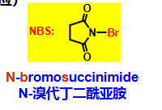
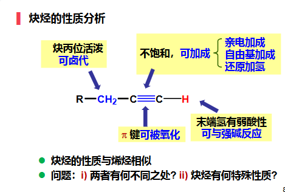
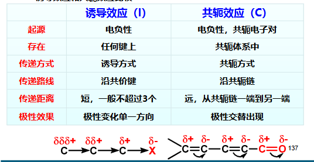

第三章 不饱和烃和共轭体系
章节概览
- 3.1 烯烃的顺反异构
- 3.2 烯烃的命名
- 3.3 烯烃的化学性质（催化加氢、亲电加成、氧化、α-H反应）
- 3.4 炔烃的命名
- 3.5 炔烃的化学性质（酸性、还原、亲电加成、亲核加成）
- 3.6 共轭体系（π-π、p-π、超共轭）
- 3.7 共轭效应与共振论
- 3.8 共轭二烯烃（1,2加成与1,4加成、Diels-Alder反应）
学习目标（重点）
- 理解烯烃顺反异构的形成条件
- 掌握烯烃和炔烃的系统命名规则（包括Z/E命名法）
- 掌握烯烃亲电加成反应机理及马氏规则
- 理解炔烃的酸性及炔钠的制备与应用
- 掌握共轭体系的类型及共轭效应的概念
- 理解共振论的基本原理及共振式的稳定性判断
- 掌握共轭二烯烃的1,2加成与1,4加成
- 掌握Diels-Alder反应的特点及应用
一、烯烃
参考资料：有机化学3 不饱和烃和共轭效应.pdf
1.1 顺反异构
形成条件
- 由于键无法自由旋转产生
- 每个双键碳原子必须连接两个不同的原子或原子团
| 类型 | 定义 | 符号 |
|---|---|---|
| 顺式 (cis) | 相同基团在双键同侧 | cis |
| 反式 (trans) | 相同基团在双键异侧 | trans |
判断技巧
如果双键某一端连接两个相同基团，则不存在顺反异构。
1.2 命名
详细规则参见 命名
(1) 基本规则
命名步骤
- 选择最长连续碳链为主链，当C=C为主链的一部分时，按其主链碳原子数称为”某烯”，超过十个碳原子则称为”某碳烯”
- 编号从靠近双键一端编起，使表示双键位置的数字尽可能小，然后将双键中编号较小碳原子序号写在”某烯”前面
- 如果最长碳链不包含C=C，则以烷烃为母体，把烯烃部分作为取代基
(2) 常见烯基
命名规则
从远到近命名，同羧酸衍生物基团的命名，如果连接碳是双键则叫做亚基。
(3) 环烯烃编号
成环碳原子编号时，1,2-留给双键碳。
(4) 桥、螺环烯烃编号
先满足桥、螺环的编号规则，再考虑给双键小编号，位次号通常省略。
(5) 顺反命名法 vs Z/E命名法
| 方法 | 规则 | 适用范围 |
|---|---|---|
| 顺反命名法 | 相同基团在同侧为cis，异侧为trans | 仅适用于有相同基团的情况 |
| Z/E命名法 | 优先基团在同侧为Z（zusammen），异侧为E（entgegen） | 通用方法 |
次序规则（CIP规则）
- 以原子序数大小为序排列，大的优先，小的在后：I > Br > Cl > S > F > O > N > C > D > H
- 与双键碳原子相连的两个原子相同时，比较连在这两个原子上的其他原子
- 若与双键碳原子相连的基团具有双键或叁键时，将其看作连接两个或三个相同的原子
- 取代基互为对映异构体时，R-构型先于S-构型；取代基互为几何异构体时，Z型优先于E型
1.3 化学性质分析

1.4 反应
(1) 催化加氢 还原 加成
特点
金属催化剂吸附，所以是顺式加成，两个H加在同一侧 立体选择性
(2) 亲电加成 加成
无立体选择性，进攻方向随机 立体选择性
| 反应类型 | 反应式 | 特点 |
|---|---|---|
| 加HX | X=I,Br,Cl，活性HI>HBr>HCl；机理：双键进攻HX，形成碳正离子，X⁻进攻；决速步骤是碳正离子形成 | |
| 加硫酸 | 生成硫酸氢酯，遵循马氏规则；后续水解得醇： 控温 | |
| 加水/醇 | 直接水合法，选择性差，不常用 控温 控pH反应 | |
| 加卤素 | 机理：形成卤素鎓离子，位阻大，X⁻从背面进攻，形成反式加成 [[术语#鎓离子 | |
| 加次卤酸 | 卤素鎓离子机制，符合马氏规则 | |
| 过氧化反应 | 走自由基机理，位阻优先；仅HBr适用，HCl和HI不适用 |
碳正离子重排
碳正离子能迁移，也会导致基团迁移，形成更加稳定的碳正离子。
硼氢化反应 协同加成
(3) 诱导效应 -C
由于电负性不同的取代基的影响，使整个分子中的成键电子云密度向某一方向偏移，使分子发生极化的效应。
| 效应类型 | 基团 | 影响 |
|---|---|---|
| -I（吸电子） | EWG（吸电子基团） | |
| +I（给电子） | （烷基） | EDG（给电子基团） |
马氏规则（Markovnikov规则） 人名反应
对称烯烃与卤化氢加成时，卤化氢中的氢总是加到含氢较多的双键碳原子上，卤素加到含氢较少的碳原子上。
实质：形成稳定的碳正离子。
示例
：-Me是EDG，将电子推向远端，所以左边碳是，右边是，加到右边（含多），加到左边。
注意事项
- 诱导效应沿着键传递，三个键以上效应消失
- 强EWG不能与碳正离子相连，不稳定（如），这是一种不遵循马氏规则的例子
- EWG会降低电子云密度，使得亲电加成速率降低
(4) 氧化反应 氧化
| 试剂 | 反应式 | 条件 | 产物 |
|---|---|---|---|
| 过氧酸 | 协同机理，加在位阻小的一边 | 环氧化物；酸化后得trans.邻二醇 立体选择性 [[醇酚醚#醚#反应]] | |
| 催化氧化 | 工业制取 | 环氧乙烷（仅适合乙烯） | |
| KMnO₄（温和） | 低温、稀碱 | 邻二醇（cis.加成）立体选择性 | |
| KMnO₄（剧烈） | 加热、酸性 | 醛酮（醛继续氧化成羧酸）；变成 脱气体 | |
| 臭氧 | Zn防止过度氧化 | 醛酮 |
(5) -H的反应（烯丙位）
| 反应类型 | 条件 | 反应式 |
|---|---|---|
| 亲电加成 | 在液相，有机溶剂中 | 走亲电加成 |
| 自由基取代 | 气相和高温 | |
| NBS取代 | NBS + 过氧化物 | |
| 氧化 |
自由基稳定性顺序
烯丙基位 > > > > 甲基自由基 > 乙烯基自由基
NBS作用
NBS持续提供低浓度，同理，苄基也适用此自由基机理。

(6) 制备
| 方法 | 说明 |
|---|---|
| 醇脱水 | 酸催化下醇脱水生成烯烃 |
| 卤代烷脱卤化氢 | 碱性环境下脱HX生成烯烃 |
二、炔烃
2.1 命名 命名
命名规则
- 简单的：烯改炔
- 同时有烯烃炔烃不在一条链：选最长的作为主链
- 在同一条主链上：编号先最小，如果相同则使双键最小；命名时先烯烃后炔烃（烯=ene，炔=yne）
2.2 化学性质分析

2.3 反应
(1) 酸性 酸碱反应
末端炔烃有弱酸性（三键电子云密度大，使得末端的H电离）。
| 反应式 | 产物 |
|---|---|
| 炔钠 + 氢气 脱气体 | |
| 炔钠 + 氨 脱气体 |
注意
和醇钠不反应（醇钠碱性不足以使末端炔烃去质子化）。
(2) 炔钠的作用
| 反应类型 | 反应式 | 说明 |
|---|---|---|
| 与伯卤代烃反应 | 不能用仲叔卤代烃，会消除 | |
| 与环氧开环 | 生成-炔基醇 | |
| 与酮反应 | 生成-炔基醇 |
(3) 末端炔烃的鉴别
加银氨溶液或者铜氨溶液分别会生成白色和红色沉淀。
(4) 还原反应 还原 加成
| 方法 | 反应式 | 特点 |
|---|---|---|
| 直接催化加氢 | 一步到烷烃 | |
| Lindlar催化剂 人名反应 | 停在烯烃，顺式加成 立体选择性 | |
| Na/NH₃(l.) | 反式加成 立体选择性 |
Lindlar催化剂特点
Lindlar催化剂经过毒化（喹啉或PbAc₂），活性低，可以停在烯烃，且因为吸附，使得是cis.加成。
(5) 亲电加成 加成
| 反应类型 | 反应式 | 特点 |
|---|---|---|
| 加HX | 最终生成偕二卤代物（马氏规则）；控制温度可停在第一步 控温；活性HI>HBr>HCl；HBr可用过氧化物走自由基机理 | |
| Hg/Cu盐存在下 | 三键比双键更易加成；得到trans.加成产物 立体选择性 | |
| 加卤素 | 第一步trans.加成 立体选择性；第二步继续加成得到四卤代物；可加Zn或Mg消除回炔烃 消除 | |
| 水合 | 遵守马氏规则；末端炔烃最终生成甲基酮；Hg盐催化下三键比双键更易水合 控pH反应 |
加成活性比较
一般加成活性：双键 > 三键，因为双键形成的碳正离子更加稳定。
(6) 亲核加成 加成
| 反应类型 | 反应式 | 条件 |
|---|---|---|
| 和醇钾 | 控pH反应 控温 | |
| 和HCN | 控pH反应 |
(7) 协同加成 加成 协同加成
硼氢化反应
(8) 氧化反应 氧化
| 试剂 | 反应式 | 条件 | 产物 |
|---|---|---|---|
| KMnO₄（温和） | 控pH反应 | 二酮 | |
| KMnO₄（剧烈） | 控pH反应 控温 | 羧酸；≡CH氧化成 | |
| 臭氧 | - | 羧酸 |
(9) 聚合反应 加成
从简单炔烃构建复杂化合物 控pH反应
(10) 制备
| 方法 | 反应式 | 说明 |
|---|---|---|
| 电石水解 | 工业制备乙炔 | |
| 甲烷部分氧化法 | 工业制备乙炔 | |
| 邻二卤代烃脱卤化氢 | 也可直接用2equiv.氨基钠 控pH反应 | |
| 偕二卤代烃脱卤化氢 | 需2当量氨基钠 | |
| 四卤代烃脱卤 | 用Mg或Zn消除 | |
| 复杂炔烃 | 用炔钠与伯卤代烃反应 |
三、共轭体系
3.1 定义
在分子结构中，含有三个或三个以上相邻且相互平行的p轨道交盖形成离域键（大π键），这种体系称为共轭体系。

3.2 共轭体系类型
| 类型 | 定义 | 示例 |
|---|---|---|
| -共轭 | 多个不饱和键构成的共轭 | 1,3-丁二烯 |
| p-共轭 | 含p轨道的原子与键直接相连 | 烯丙基自由基（p-）、烯丙基碳正离子（缺电子p-）、卤代烯烃（多电子p-） |
| -超共轭 | 双键的碳氢键键形成超共轭 | 烷基取代烯烃 |
| -p超共轭 | 碳氢键和未成键p轨道形成超共轭 | 乙基碳正离子 |
超共轭特点
超共轭比普通共轭弱，参与超共轭的碳氢键越多，超共轭效应越强；超共轭越多，电荷越分散，碳正离子或自由基越稳定。
3.3 共轭效应 -C
由于电子的离域使体系的能量降低、分子趋于稳定、键长趋于平均化的现象叫做共轭效应(Conjugative effect, 用C表示)，也叫离域效应。
| 效应类型 | 定义 | 常见基团 |
|---|---|---|
| +C（给电子共轭） | 能给出电子（推电子）的原子或基团 | 含孤对电子的基团（如-OH, -OR, -NH₂） |
| -C（吸电子共轭） | 能吸引电子的原子或基团 | 多出现在π-π共轭体系（如-NO₂, -CN, 羰基） |
I和C的对比
注意极性的交替出现。

3.4 共振论
(1) 基本概念
当一个分子、离子或自由基的结构可用一个以上不同电子排列的经典结构式（共振式）表达时，就存在着共振；这些共振式（极限结构）均不是这一分子、离子或自由基的真实结构，其真实结构为所有共振式的杂化体。
关键理解
共振式只是理论存在形式，而真实形式是一种混合态。
(2) 共振式画法规定
规则
- 参与共振的原子应有p轨道
- 所有共振式的原子排列相同
- 所有共振式均符合Lewis结构式
- 所有共振式具有相等的未成对电子数
(3) 共振式稳定性比较
稳定性顺序（贡献从大到小）
- 共价键数目最多的共振式最稳定
- 共振式的正负电荷越分散越稳定
- 具有完整的价电子层的共振式较稳定
- 负电荷在电负性大的原子上的共振式较稳定
3.5 共轭二烯烃
(1) 1,2加成与1,4加成 加成
| 加成类型 | 定义 | 条件 |
|---|---|---|
| 1,2加成 | 加在一个双键上 | 低温 控温 |
| 1,4加成 | 加在两个双键上，加在外侧，内侧形成2,3双键 | 高温 控温 |
详细说明参见 决定因素
(2) Diels-Alder反应 人名反应
共轭二烯和单烯烃发生1,4加成，成环反应。
特点
知识检查
AI 认为需要修正的内容：
- “亲电加成无立体选择性，进攻方向随机” → 烯烃的亲电加成通常有立体选择性，如加卤素是反式加成，催化加氢是顺式加成。原文可能指的是加成方向（马氏/反马氏）而非立体化学。
- “硼氢化反应式中产物写为” → 应为，硼原子应连接在含氢较多的碳上，形成三烷基硼。
- “炔烃水合生成后互变异构成” → 正确，但应明确说明这是烯醇式到酮式的互变异构，是热力学驱动的。
- “Diels-Alder反应需要Δ” → 正确，但部分Diels-Alder反应也可以在室温下进行，加热通常用于加速反应或改善立体选择性。
相关笔记
- 命名 — 有机化合物命名规则
- 术语 — 有机化学常用术语表
- 立体化学 — 立体化学系统笔记
- 烷烃和环烷烃 — 环烷烃的开环加成反应
- 卤代烃 — 卤代烃的消除反应制备烯烃
- 醇酚醚 — 醇脱水制备烯烃
- 芳烃和芳香性 — 芳香烃的加成反应
- 醛酮 — 炔烃水合生成酮
整理自：课堂笔记及参考课件